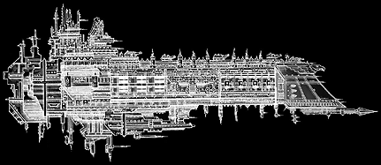

Battlefleet Gothic |
Armageddon |
Armageddon |
Playing BFG |
Report Your |
|
Imperial Oberon Class Battleship - 335 Points The Oberon-class Battleship is an incredibly rare vessel, a very early variant of the Emperor-class that has been gradually phased out after the renowned successes of its more well known predecessor. The Oberon itself was an attempt to design a Battleship that could theoretically deal with all manner of threats without the constant need of all existing classes to rely on escorting vessels. Though it lacks the sheer blanket coverage of ordnance that an Emperor-class can lay down, the Oberon retains all the fearsome firepower of the previous design, whilst adding two devastating long ranged Lance batteries to each broadside. Often used in dangerous armed patrols with little or no escort, the Oberon is able to utilise its superior sensor probes to allow a Captain to judge the nature of potential threats long before they are aware of the Battleship's own presence, a factor that makes the Oberon superior to most other ships in this role. In combat, the Oberon lacks the hard hitting power of the Retribution and Apocalypse classes and the massive attack craft wings that an Emperor can deploy, but it has consistently proved itself to be a very capable ship of the line that has the potential to defeat any enemy it may face.
Notes: The Oberon-class Battleship cannot be given Come to New Heading special orders. Like the Emperor-class, the Oberon dispenses with the normal armoured prow and instead carries a mass of sensor probes that it uses to direct its attack craft to the enemy. This also adds +1 to its Leadership rating. For an extra +5 points, the Oberon-class may carry squadrons of Shark Assault Boats.
|
|||||||||||||||||||||||||||||||||||||||||||||||||||||||